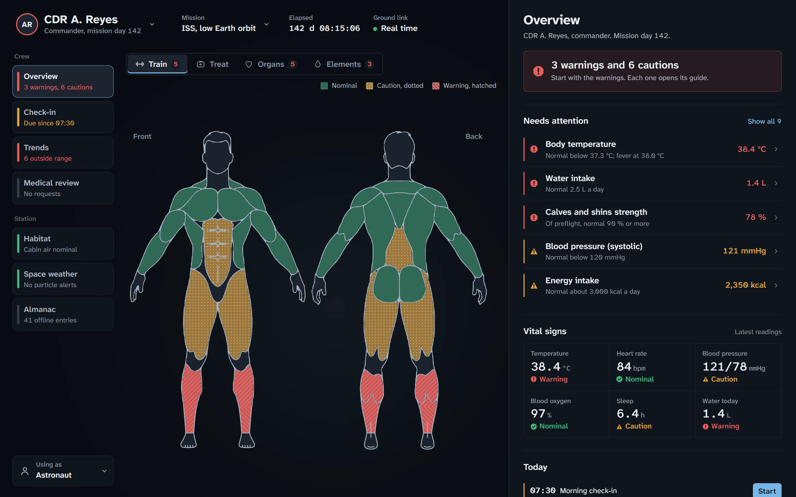

Daily check-in
Fill vitals from the sensors or type them in, log water by the cup, rate mood, tick symptoms and attach a photo.
Crew health console for long-duration missions
Health Check at a Glance brings body readings, cabin air and space weather onto one body model. Each reading is checked against flight health limits, explained in plain words, and tied to a next step: an exercise, a first-aid guide, or a summary for the Crew Medical Officer to approve.
Each muscle group is colored by strength against preflight. Here the calves and shins are at Warning.
Sample crew member. Readings are simulated.
The console follows the same path every time, so a crew member knows what happens after each check.
Each morning the astronaut logs vitals from the on-board sensors, then water, sleep, mood and any symptoms. A photo can be attached for a skin change or an injury.
Every reading is compared with its limit. Status always pairs a color with a shape and a word, and the body model adds a texture, so it never relies on color alone.
Low strength opens exercises on the equipment carried on that mission. A symptom opens a first-aid guide adapted for microgravity, which starts with red-flag checks.
When a reading needs a professional, the console builds a summary with the readings, the 14-day range, cabin conditions, symptoms and steps already taken. The Crew Medical Officer decides.
The body model stays on screen. Everything about the crew member opens in the panel beside it, so the astronaut never loses their place.

Fill vitals from the sensors or type them in, log water by the cup, rate mood, tick symptoms and attach a photo.
Fourteen-day charts with the normal band shaded. A crosshair reads any day, and readings outside the band are counted on the menu.
A summary moves from sent to received and under review, then ends approved, sent back for a re-measure, or escalated to flight surgeons.
Carbon dioxide, oxygen, temperature, humidity, pressure and radiation for each module, checked against flight limits.
Solar event notifications from NASA DONKI, live when a link is up and kept on board when it is not, with a shelter drill.
Offline entries for first aid, exercise and daily health. Searchable with no network, and linked from every guide.
Gravity, equipment and the delay to Earth change with the mission. Exercise names follow the equipment carried, and escalation advice accounts for how long a reply takes.
One set of rules decides every status. The same rules drive the body model, the menu and the review summaries, and each one names its source.
| Reading | Nominal | Source |
|---|
No account and nothing to install. Choose how you are using it, pick a crew member, and start a session.